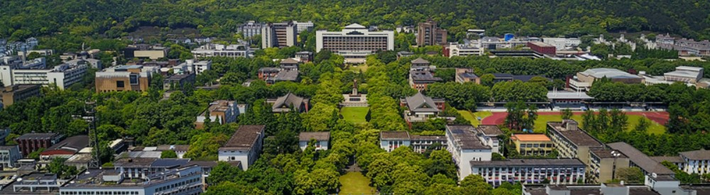

Hehe Fan
Zhejiang University
BIO
I am currently a ZJU100 Young Professor with the College of Artificial Intelligence at Zhejiang University.
Before that, I was a Research Fellow with Prof. Mohan S. Kankanhalli at National University of Singapore.
My research focuses on computer vision, LLM & agent, embodied AI and AI for science.
I received my PhD degree at University of Technology Sydney, advised by Prof. Yi Yang.
Recruiting
Ph.D. Students, Master's Students, Postdoctoral Fellows, and Assistant Researchers.
To better plan your academic research path, prospective Ph.D. and Master's applicants are encouraged to reach out during their freshman or sophomore year.
There are no strict requirements regarding GPA rankings (as long as qualification for postgraduate recommendation is anticipated), but applicants with a solid practical foundation are highly appreciated. Priority consideration will be given to those who have experience in programming competitions such as ACM ICPC and NOI, or who have already accumulated certain academic achievements (TPAMI, IJCV, NeurIPS, ICLR, ICML, CVPR, ICCV, ECCV, ACL, EMNLP, ICRA, IROS, CoRL). Looking forward to your joining!
The admission quotas for 2027 Master's and Ph.D. students have been filled.
Students majoring in Control, Pharmacy, and Materials Science are also welcome to apply!
Google Scholar
GitHub
Chinese
News
|
Augest 2026
|
One paper accepted to TPAMI and five papers accepted to EMNLP 2026.
|
|
July 2026
|
One paper accepted to SIGGRAPH Asia 2026 and one paper accepted to ACL 2026.
|
|
June 2026
|
Eight papers accepted to CVPR 2026.
|
|
May 2026
|
Four papers accepted to ICLR 2026 and Two papers accepted to ECCV 2026.
|
|
Mar 2026
|
Three papers accepted to ICML 2025.
|